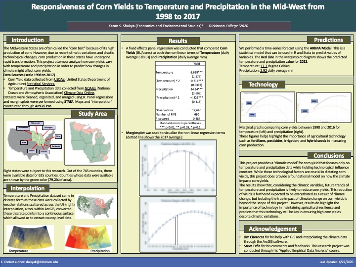

Last updated: 2020-05-15
Checks: 1 1
Knit directory: erfle-corn_yields/
This reproducible R Markdown analysis was created with workflowr (version 1.6.2). The Checks tab describes the reproducibility checks that were applied when the results were created. The Past versions tab lists the development history.
The R Markdown file has unstaged changes. To know which version of the R Markdown file created these results, you’ll want to first commit it to the Git repo. If you’re still working on the analysis, you can ignore this warning. When you’re finished, you can run wflow_publish to commit the R Markdown file and build the HTML.
Great! You are using Git for version control. Tracking code development and connecting the code version to the results is critical for reproducibility.
The results in this page were generated with repository version 44801f0. See the Past versions tab to see a history of the changes made to the R Markdown and HTML files.
Note that you need to be careful to ensure that all relevant files for the analysis have been committed to Git prior to generating the results (you can use wflow_publish or wflow_git_commit). workflowr only checks the R Markdown file, but you know if there are other scripts or data files that it depends on. Below is the status of the Git repository when the results were generated:
Ignored files:
Ignored: .Rhistory
Ignored: .Rproj.user/
Unstaged changes:
Modified: analysis/index.Rmd
Note that any generated files, e.g. HTML, png, CSS, etc., are not included in this status report because it is ok for generated content to have uncommitted changes.
These are the previous versions of the repository in which changes were made to the R Markdown (analysis/index.Rmd) and HTML (docs/index.html) files. If you’ve configured a remote Git repository (see ?wflow_git_remote), click on the hyperlinks in the table below to view the files as they were in that past version.
| File | Version | Author | Date | Message |
|---|---|---|---|---|
| Rmd | a9e6920 | KaranSShakya | 2020-05-15 | Start workflowr project. |
This project was completed under the course Econ 314: Applied Empirical Data Analysis during the Spring 2020 semester under Professor Steve Erfle. This project was also completed with the help of Jim Ciarrocca, Dickinson’s GIS specialist.
In summary, this project is a fixed-effect regression analysis comparing corn yields with temperature and precipitation. We worked with a balanced dataset. Additionally, we completed marginsplot analysis through STATA, and performed an ARIMA Model forecasting through R. NOAA datasets needed to be interpolated (as we required county-level data), and this was done through ArcGIS’s interpolation - kriging tool.
Corn yield data was collected from USDA’s National Agricultural Statistical Services’s Quick Stat page (https://quickstats.nass.usda.gov/). A survey data for corn yields was selected.
For temperature and precipitation, data was downloaded from NOAA’s Climate Data Online (https://www.ncdc.noaa.gov/cdo-web/webservices/v2#gettingStarted). Since we downloaded daily temperature and precipitation values, R was required to open these datasets. They were group_by and summarized into yearly averages.
The only analysis in ArcGIS was the interpolation - kriging method. All other R analysis was in this GIT page.
